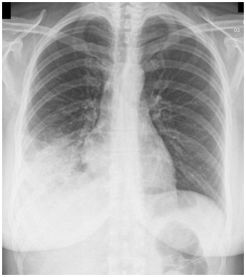

Sobre o vírus da hepatite C, podemos afirmar que:
Ao avaliar um paciente com esteatose hepática, o que fazer em um primeiro momento?
Mulher, 21 anos, em avaliação pré-operatória de otoplastia evidenciou-se tempo de tromboplastina parcial ativado (TTPa) prolongado. Refere epistaxes frequentes e equimoses espontâneas desde a infância, e sangramento uterino anormal (ciclos menstruais com duração de mais de 10 dias, com coágulos e necessidade de absorvente noturno contínuo). Mãe com sintomas Nega procedimentos cirúrgicos prévios. Exame físico sem alterações. Exames laboratoriais: Hb: 11,7g/dL; VCM: 78fL; GB: 6.200/µL; plaquetas: 250.000/µL; TTPa: 53 segundos (VN < 44,6); TP (Tempo de protrombina): 13,5 segundos (VN < 17,3). Qual elemento do sistema hemostático da paciente mais provavelmente está envolvido?
Homem, 46 anos, retorna à consulta ambulatorial para resultado de exames após acidente vascular cerebral isquêmico há 5 semanas, com boa evolução da fase aguda. Antecedente pessoal: cirurgia bariátrica há 6 anos, sem acompanhamento ou medicações 18.000/µL (segmentados 76%, linfócitos 10%, monócitos 5%; eosinó los 6%, basó los 3%), plaquetas = 1.450.000/µL. Ferritina: 4ng/mL. Exame físico: baço palpável a 2 cm do rebordo costal esquerdo. Qual é o diagnóstico?
Um adolescente compareceu ao ambulatório de neurologia acompanhado de sua mãe. O motivo da consulta foi estar apresentando vários episódios de “desligamentos” que duram aproximadamente de 5 a 10 segundos, o paciente ca com o olhar xo, perde contato com o meio por alguns segundos e muitas vezes não é percebida pelo paciente e sim pelos familiares e/ou professores. Geralmente são precipitadas por hiperventilação durante aula de artes marciais. Qual o diagnóstico clínico mais provável para o paciente?
Revisar: possível letra faltando em enunciado
Um motorista de Uber 68 anos de idade, começou a apresentar sinais e sintomas neurológicos de caráter progressivo início d o quadro há 18 meses. O que mais chamou sua atenção foram diminuição das forças principalmente em membros superiores com músculos tensos e rígidos, atro a em mãos, contrações musculares nos braços e língua, di culdade para deglutição e fala anasalada. Qual o diagnóstico provável?
Sobre a classificação de Risco e Manejo do paciente com dengue, marque a alternativa
Rapaz de 18 anos é atendido no prontoatendimento com mal-estar geral, artralgia e febre alta há 05 dias. Refere uso esporádico de cocaína endovenosa. Exame físico: Vigil e orientado. Presença de hemorragias conjuntivais. Mucosas descoradas. Pa: 100x50mmhg, fc: 108bpm, fr: 24ipm e tax: 38,5ºC. MBV abolido em base de pulmão esquerdo. Sopro sistólico pancardíaco (++/+6). Baço palpável a 2cm do rebordo costal esquerdo. Em relação ao quadro relatado, é CORRETO
O termo “Insu ciência Cardíaca Crônica” re ete a natureza progressiva e persistente da doença. Embora a maioria das doenças que levam à Insu ciência Cardíaca (IC) caracterizem-se pela presença de baixo débito cardíaco (muitas vezes compensado) no repouso ou no esforço (IC de baixo débito), algumas situações clínicas de alto débito também podem levar a Insuficiência Cardíaca entre elas:
No diagnóstico de Hipertensão Arterial podemos encontrar Hipertensão mascarada que é caracterizada por:
A Hanseníase constitui importante problema de saúde publica em nosso meio, no Brasil 17.979 casos novos foram noti cados em 2020 (MS, 2022). Na Fundação Hospitalar Alfredo da Matta em 2021 foram diagnosticados 81 casos novos sendo 86,4% multibacilares. Analise as afirmativas a seguir: I. De ne-se caso de hanseníase Lesão (ões) e/ou áreas (s) da pele com alteração de sensibilidade térmica e/ou dolorosa e/ou tátil; e ou Espessamento de nervo periférico, associado a alterações sensitivas e/ou motoras e/ou autonômicas. II. A hanseniase dimorfa caracteriza-se pela presença de uma imunidade instável, podendo atingir mais de um tronco nervoso, episódios reacionais frequentes e baciloscopia sempre positiva. III. O tratamento das formas paucibacilares é feito com o PQT-U, rifampicina, dapsona e clofazimina por 6 meses. IV. Na avaliação neurológica dos casos suspeitos, a eletroneuromiogra a mostra anormalidades na condução axonal e desmielinizantes que são especificos para neuropatia hansênica. Assinale a alternativa
A esporotricose é a micose subcutânea mais prevalente na América Latina. Em Manaus casos autoctones tem surgido desde dezembro 2020 ocasionando um surto epidêmico da doença. Assinale a alternativa
Maurício tem 37 anos, é um paciente com transtorno de adição por substâncias ilícitas, consome cocaína e inala crack. Adoeceu por tuberculose pulmonar confirmada por exame de escarro e imagem 2 anos atrás, entretanto abandonou o tratamento ainda no quarto mês. A equipe de saúde não conseguiu contato na busca ativa na época do abandono e agora retorna com queixa de tosse produtiva, perda ponderal, febre vespertina e astenia. Qual das alternativas a seguir discrimina a conduta mais apropriada para Maurício nesse momento?
Você está atendendo Cleide no serviço de emergência, ela tem 23 anos e vem trazida pela mãe, a qual relata que Cleide iniciou um quadro de dor em região de arcos costais à direita, há 3 dias, associada a febre e tosse produtiva comexpectoração mucopurulenta. Ao exame físico encontra-se desorientada no tempo e no espaço, taquidispneica (fr 35 irpm) e taquicardica, com fc 124irpm. PA 100x70mmhg. Presença de estertores crepitantes em terço inferior de pulmão direito. FTV aumentado a direita. Exames laboratoriais revelam ureia de 100. Leucócitos 23.000 com bastões 10% e PCR 125. A seguir segue a imagem da radiogra a de tórax realizada nesse atendimento. Considerando história clínica, tempo de evolução, achados no exame físico e em exames complementares, qual o diagnóstico da paciente, onde o tratamento deve ser realizado e qual a proposta terapeutica inicial?

A síndrome nefrótica pode estar associada às Glomerulopatias Primárias, à Doença Renal do Diabetes, Lúpus Eritematoso Sistêmico e Paraproteinemias. São exames que poderiam ajudar no esclarecimento diagnóstico,
A presença de hematúria no exame de rotina é um importante achado ao EAS. São exames importantes para esclarecimento diagnóstico:
Indicações de PAAF Sobre a avaliação por imagem de nódulo de Tireoide (NT), assinale a alternativa
A hiperprolactinemia pode ser resultado de causas siológicas, farmacológicas e patológicas. Dessa forma, as alternativas a seguir figuram como possíveis causas de hiperprolactinemia,
Na artrite reumatoide, qual é o padrão mais comum de comprometimento articular? Assinale a alternativa
Mulher, 54 anos, com ombro doloroso à direita e suspeita clínica de lesão do manguito rotador. Ao exame, ombro direito com dor e importante limitação para rotação interna. O músculo mais provavelmente comprometido é:
Tratamento Paciente do sexo feminino, 13 anos, refere quando de dor tipo cólica, em epigástrio, que migrou para FID, com aumento progressivo de intensidade, associada a náuseas e vômitos. Evolução de 48 horas. Nega febre e diarreia. Refere menarca há cerca de 6 meses, com ciclos regulares. Nega leucorréia. Seu abdome é plano, ácido, doloroso à palpação profunda em FID, com sinais de Blumberg e Rovsing positivos. Sobre o caso acima, assinale a alternativa
Você é chamado para avaliar uma paciente de 60 anos, obesa e diabética, que está internada há 3 dias devido a quadro de dor tipo cólica em HD, irradiada para o dorso, associada a vômitos, após ingesta de alimentação rica em gordura. Refere episódios semelhantes prévios que melhoraram com analgesia no domicílio. Na sua admissão, foi realizada ultrassonogra a de abdome que evidenciou vesícula biliar de paredes espessadas e cálculo de 1,5cm impactado em infundíbulo, sendo internada para tratamento clínico com dieta zero e analgesia. Neste momento, queixa de manutenção do quadro doloroso e náuseas. Nega febre desde o início do quadro. Seu estado geral é bom e encontra-se eupneica, afebril, anictérica e normotensa. Seu abdome é globoso, doloroso à palpação profunda em HD, com sinal de Murphy positivo e plastrão palpável. Sobre a avaliação e proposta terapêutica desta paciente, assinale a alternativa
Paciente do sexo masculino, 58 anos, natural de Lábrea, dá entrada no pronto atendimento com quadro de hematêmese volumosa e sinais de choque hipovolêmico, sendo encaminhado imediatamente a sala de reanimação. Ao exame físico, o paciente se encontra emagrecido, com nível de consciência rebaixado, pálido, ictérico ++/4, taquicárdico, taquipneico e hipotenso, com edema de membros inferiores. Seu abdome é ascítico, com evidente circulação colateral periumbilical. A família não sabe referir sobre doenças de tratamento crônico ou acompanhamento médico. Você intuba o paciente e inicia reposição volêmica com ringer lactato como medidas iniciais. Sobre o caso acima, assinale a alternativa
Paciente do sexo masculino, 35 anos, estivador, fumante inveterado, vem ao ambulatório de Cirurgia Geral queixando quadro de dor e abaulamento em região inguinal direita aos esforços físicos, com evolução progressiva, há cerca de 4 anos (SIC). Ao exame físico, o paciente se encontra hígido, em BEG, LOTE, eupneico, afebril, hemodinamicamente estável. Ao exame da região inguinal direita, observa-se abaulamento à manobra de Vassalva, redutível e discretamente desconfortável à palpação. O paciente trouxe consigo na consulta, uma ultrassonogra a com diagnóstico de hérnia inguinal à direita. A abordagem cirúrgica convencional da região inguinal foi indicada e o achado intra-operatório foi de projeção peritoneal sacular que se protruía através de laceração de fascia transversalis e seu conteúdo era composto por epíplon. A exploração cirúrgica do funículo espermático não demonstrou alterações anatômicas. Sobre os dados oferecidos sobre este caso, assinale a alternativa
Paciente do sexo feminino, 22 anos de idade, dá entrada no pronto atendimento com quadro de dor abdominal iniciada em FID e irradiada para toda a pelve, de leve a moderada intensidade, há cerca de 8 horas, acompanhada de tontura, mal-estar e sensação de síncope. Não sabe referir adequadamente o caráter da dor. Nega vômitos, diarreia e sintomas urinários. Refere leucorréia esbranquiçada há 3 meses, ciclo menstrual irregular, com data da última menstruação há cerca de 2 meses. Vida sexual ativa com uso irregular de preservativos ou outros métodos contraceptivos. Ao exame físico encontra- se hipocorada +++/4, FR: 25irpm, FC: 100bpm, P.A.: 90 x 60mmHg. Abdome plano, ácido, simétrico, doloroso à palpação profunda em toda a pelve, com irritação peritoneal duvidosa. Refere dor ao toque vaginal. Toque retal sem alterações. Sobre o caso acima, assinale a alternativa
Paciente do sexo masculino, 29 anos, vem ao consultório de Cirurgia queixando história de episódios de dor perianal que melhora com a drenagem espontânea de secreção purulenta sempre pelo mesmo local, há cerca de um ano de evolução. Refere que o quadro iniciou alguns meses após internação hospitalar para drenagem cirúrgica de abscesso perianal. Ao exame físico, observa-se lesão semelhante a pequeno granuloma, localizado às 11 horas, há cerca de 2cm do rebordo anal, com saída de pequena quantidade de secreção à sua expressão. Palpa-se cordão broso subcutâneo que se origina n a lesão descrita e se direciona ao rebordo anal. De acordo com os dados descritos acima, assinale a alternativa CORRETA
Remover o potássio do organismo Paciente do sexo masculino, 34 anos, vítima de atropelamento em via pública, apresentando fratura de bacia e lesão tipo esmagamento de membro inferior direito com fraturas de fêmur e tíbia. Foi submetido a cirurgia ortopédica para xação da fratura de bacia e estabilização das fraturas, sendo hidratado com Ringer Lactato e transfundido 3 concentrados de hemácias. Evoluiu com insu ciência renal aguda no pós-operatório, sendo solicitado parecer do nefrologista. O paciente, porém, apresentou quadro de fraqueza muscular importante e dor torácica. À ausculta torácica, observamos ritmo cardíaco irregular (arritmia), sendo realizado um ECG que evidenciou onda T apiculada e bloqueio átrio-ventricular. Sobre o provável distúrbio eletrolítico deste paciente e sua condução, assinale a alternativa
Paciente do sexo masculino, 65 anos, sobrepeso, tabagista e diabético, procura atendimento médico devido a quadro de icterícia progressiva e inapetência há cerca de 1 mês. Nega dor abdominal ou vômitos. Ao exame físico, apresenta-se em BEG, eupneico, afebril, normotenso, ictérico +++/4, com abdome plano, ácido, indolor à palpação. Sinal de Curvoisier- Terrier presente. Sinal de Murphy negativo. Per l laboratorial: Hematócrito 32%, Hemoglobina 11g/dl; Bilirrubinas totais: 18mg/dl, Bilirrubina direta: 15mg/dl, Fosfatase alcalina: 634mg/dl e GamaGT: 1.200mg/dl. Foi submetida a USG de abdome que evidenciou ausência de cálculos na vesícula biliar, dilatação expressiva do colédoco e massa sólida na cabeça do pâncreas. Sobre o caso descrito, assinale a alternativa
Paciente do sexo masculino, 23 anos, é vítima de agressão física após assalto em região periférica da cidade, é trazido ao pronto atendimento em estado grave. Durante a avaliação inicial, o paciente se encontra com nível de consciência bastante rebaixado, apresentando lesões contusas em face e crânio, com coluna cervical sem degraus ou crepitação à palpação. O paciente apresenta FR: 30 irpm e seu tórax também apresenta lesões contusas em ambos os hemitórax, além de orifício de ferimento por arma de fogo à direita (entrada em parede anterior e saída em parede posterior). Palpa- se en sema subcutâneo nessa região e o murmúrio vesicular é bastante diminuído nesse hemitórax. O paciente se encontra hipocorado ++/4, com FC: 92bpm e P.A.: 90 x 60mmHg. Não se observa sangramentos externos. FAST negativo. Neste momento, o paciente apresenta abertura ocular ao estímulo de pressão, não responde ao comando verbal e apresenta resposta motora com localização de estímulo, além de ausência de reflexo pupilar a estímulo luminoso à direita. Membros superiores sem deformidades. Bacia estável. Coxa esquerda aumentada de volume com encurtamento e rotação externa do membro. Sobre as condutas iniciais a serem tomadas neste paciente, assinale a alternativa
Paciente do sexo feminino, 34 anos, dá entrada no pronto atendimento com quadro de dor em HD associada a vômitos, que migrou para o dorso e todo o abdome superior após algumas horas, evoluindo com piora expressiva de intensidade. Refere episódios prévios de dor em HD, mas nunca tão intensos. Ao exame físico, a paciente se encontrava bastante desidratada, taquicárdica, levemente dispneica, normotensa e oligúrica. Seu abdome era plano, bastante doloroso à palpação profunda em todo andar superior do abdome, sem irritação peritoneal. Sua investigação propedêutica revelou colelitíase, leucocitose discreta e hiperamilasemia. A paciente foi internada em dieta zero, sendo prescrita hidratação venosa, hemodinâmica, normalização da frequência respiratória e do débito urinário, porém mantinha quadro doloroso abdominal, agora com distensão, sendo mantida a internação. No 8º dia de internação, evoluiu com sinais de choque e febre, sendo submetido a tomografia de abdome que revelou coleção peripancreática contendo gás no seu interior. Sobre o caso acima, assinale a alternativa
Paciente do sexo masculino, 65 anos, com história de constipação crônica e baixa ingesta alimentar de bras, vem ao pronto socorro queixando dor tipo cólica, aguda, em FIE, de moderada intensidade, há cerca de 48 horas, associada a náuseas, vômitos e parada de eliminação de fezes. Refere, ainda, 1 episódio de febre baixa. Nega comorbidades como hipertensão e diabetes. Ao exame físico, encontra-se em BEG, eupneico, afebril, hemodinamicamente estável. Seu abdome é plano, ácido, bastante doloroso à palpação profunda em FIE, com discreta irritação peritoneal. Leucograma: 16.000. Proteína C reativa: 80mg/l. Foi submetido a Tomogra a Computadorizada de abdome que evidenciou presença de múltiplos divertículos em cólon sigmoide, com borramento da gordura pericólica e presença de coleção líquida bloqueada de cerca de 6cm. Sobre o caso acima, assinale a alternativa
Policial 32 anos, vítima de ferimento por arma de fogo em tórax durante troca de tiros com tra cantes, é atendido por você em um Pronto Socorro com equipe multipro ssional treinada para o trauma e bons recursos diagnósticos. O paciente apresenta orifício de entrada a nível do 7º espaço intercostal direito, sem orifício de saída. Ao exame físico, apresenta-se em BEG, discretamente dispneico e taquicárdico, normotenso. A ausculta torácica revela diminuição do murmúrio vesicular à direita. Apresenta, ainda, dor abdominal de leve intensidade à palpação profunda, sem sinais de irritação peritoneal. A radiogra a de tórax evidenciou moderado derrame pleural associado a pneumotórax com comprometimento de 50% da expansão pulmonar. Sobre o caso descrito, qual a conduta mais adequada?
Paciente do sexo feminino, 62 anos, tabagista, hipertensa e diabética, com queixa de sintomas dispépticos há cerca de 6 meses. Em atendimento médico prévio, foi prescrito Omeprazol 40mg diário, o qual fez uso por 4 meses, sem resposta satisfatória da sua sintomatologia, evoluindo com anorexia. Evolui com emagrecimento de cerca de 5kg no período. Nega febre, uso crônico de anti-inflamatórios não hormonais e história familiar de neoplasias do trato gastrointestinal. Você solicita endoscopia digestiva alta e esta evidencia lesão plana, com ulceração rasa e bordas elevadas, de cerca de 2cm, em incisura angularis. Qual das conclusões a seguir sobre o caso descrito é falsa?
Paciente do sexo feminino, 10 anos, é trazida pela mãe para consulta com o Cirurgião a respeito de massa cervical de cerca de 3 a 4 cm, localizada na linha média a nível do osso hióide, móvel à deglutição. Mãe refere episódios de processo inflamatório local com drenagem de secreção purulenta e posterior recidiva da nodulação. Não havia linfonodomegalia à palpação cervical. Traz consigo USG que define a massa como estrutura cística. Sobre o caso descrito, assinale a alternativa
Paciente do sexo masculino, 4 anos, é trazido pela mãe ao pronto atendimento após esta observar “sangue na urina”. O paciente não apresenta história de dor, febre ou trauma abdominal recente. Ao exame físico, o paciente se encontra em BEG, normocorado, eupneico e afebril, mas chama a atenção uma P.A.: 140x100mmHg. Seu exame cardiorrespiratório é normal. À palpação abdominal, observa-se massa palpável, de consistência rme, não móvel, de cerca de 15cm, em anco esquerdo. Hemograma e ionograma sem alteração. O EAS evidencia de 15 hemácias por campo de microscopia. Sobre o caso descrito, assinale a alternativa
Paciente do sexo feminino, 13 anos, vem à consulta médica queixando dor em FID e pélvica, de leve intensidade, há 1 mês. Nega vômitos, febre e alterações do hábito intestinal. Refere menarca aos 12 anos, com ciclos menstruais irregulares. A o exame físico, a paciente se encontra normocorada, eupneica, afebril, hemodinamicamente estável. Exame cardiorrespiratório sem alterações. Seu abdome é plano, ácido, discretamente doloroso à palpação profunda em FIE e hipogástrio, onde se palpa massa sólida, rme e móvel. Qual o próximo passo para a investigação diagnóstica e seu provável achado?
Manometria Esof ágica Paciente do sexo feminino, 43 anos, refere que, há 1 ano e meio, iniciou quadro de disfagia inicialmente para sólidos que evoluiu progressivamente para disfagia para alimentos pastosos, associada a regurgitação de alimentos não digeridos e tosse seca. Refere piora da regurgitação e tosse durante o decúbito, além de perda de 10kg no período. Seu exame físico cervical, torácico e abdominal não tem alterações relevantes. Solicitada endoscopia digestiva alta, esta evidenciou esofagite leve, discreta dilatação esofagiana, ausência de hérnia hiatal e discreta resistência do esfíncter esofagiano inferior (EEI) à insuflação com ar. Sobre o caso acima, assinale a alternativa
Paciente do sexo masculino, 55 anos, hipertenso e com história recente de angina instável, dá entrada no pronto socorro apresentando quadro de dor epigástrica em queimação, intensa, que migrou para todo o abdome, acompanhada de sinais claros de peritonite difusa, com evolução de 6 horas. Associado ao quadro abdominal, apresenta dor torácica e dispneia. Submetido a eletrocardiograma, este evidencia alterações isquêmicas nas derivações anteriores. A radiogra a de tórax evidencia pneumoperitoneo. Quais das condutas a seguir é a mais adequada para o caso?
Paciente do sexo feminino, 57 anos, obesa, foi submetida a hemicolectomia esquerda para tratamento de neoplasia de cólon há 7 dias. Devido a dor no pós-operatório, não deambulou de forma satisfatória. Hoje apresenta quadro de dispneia súbita na enfermaria, acompanhada de dor torácica, taquicardia e sensação de desmaio. A ausculta pulmonar demonstra murmúrio vesicular diminuído nas bases pulmonares. Seu abdome é globoso, ácido e indolor e está aceitando dieta e defecando normalmente. Foi submetida a radiogra a de tórax que evidenciou discreta atelectasia de bases pulmonares. Neste momento, qual das condutas a seguir é a mais adequada?
Paciente do sexo feminino, 28 anos, com história de sangramento oral durante a escovação dos dentes, equimoses pelo corpo sem causa aparente e hipermenorréia. Seu exame físico da cabeça, tórax e abdome não apresenta alterações dignas de nota. Não há massas ou visceromegalias abdominais palpáveis. Observam-se equimoses em joelhos e petéquias em membros inferiores. No seu hemograma, o hematócrito, a hemoglobina e o leucograma são normais, mas a contagem de plaquetas é de 22.000. Encaminhada para acompanhamento com o Hematologista, foi submetido a mielograma que evidenciou presença normal de megacariócitos e não foi observado sinal de malignidade. O Hematologista iniciou tratamento clínico com corticóides, porém obteve resposta não satisfatória, sendo encaminhado ao Cirurgião para avaliação da possibilidade de esplenectomia. Sobre o caso acima, assinale a alternativa
Paciente 18 anos, nuligesta, com queixa de dismenorreia crônica, foi diagnosticada com endometriose. Qual melhor conduta para esse caso?
Paciente 30 anos, foi ao ambulatório de ginecologia com dor mamária referindo nódulo em mama esquerda. Levou ultrassonografia com achado de imagem anecóica, de paredes lisas, com reforço acústico posterior, medindo 40 mm. Qual a melhor conduta para este caso?
Gestante, 30 anos, 13 semanas, foi a consulta de pré-natal com laudo ultrassonográ co de anencefalia. Qual dos documentos a seguir é necessário para que seja feita a interrupção da gestação:
Revisar: possível letra faltando em enunciado
Segundo Manual do Ministério da Saúde 2022, com qual frequência deve ser realizado o rastreamento de HIV e sí lis na população de adolescentes e jovens (idade menor ou igual a 30 anos)?
Na classificação de síndromes de úlcera anogenital, preconizada pelo ministério da saúde 2022, o agente etiológico responsável pela Donovanose é:
São manifestações da sífilis primária:
Paciente 22 anos, Gesta 1:Para 1, foi a consulta para orientação anticoncepcional. Refere trombose história de trombose venosa profunda há um ano. Está em uso de preservativos, mas, deseja um método mais efetivo que não seja oral, pois tem medo de esquecer. Nega tabagismo ou uso de outros medicamentos. Qual a recomendação mais adequada nesse caso?
Paciente 20 anos refere corrimento vaginal claro, com prurido, ardência vulvar, com piora no período pré-menstrual. Ao exame ginecológico: corrimento vaginal, branco, polimorfonucleares, lactobacilos ++++/4 e células intermediarias integras. O teste de aminas foi negativo e o PH vaginal é 4,0. Qual diagnóstico provável?
Paciente 35 anos, tabagista, refere sangramento uterino anormal há 12 meses. Refere aumento de uxo menstrual. Exame ginecológico: útero discretamente aumentado. Ultrassonogra a transvaginal: nódulos compatíveis com miomas intramurais medindo 3,0 cm e 2,0 cm. Qual a conduta mais adequada?
Em relação a tratamentos de reprodução assistida na população LGBTQIA+ conforme a resolução do CFM 2.294 de 27 de maio de 2021, é
Gestante 40 semanas, em fase ativa de trabalho de parto, apresentou dor abdominal súbita, lancinante com interrupção das contrações. Ao exame: PA: 70 x 40mmHg, FC:130 bpm, FR: 33 irpm, atividade uterina ausente, sem sangramento vaginal. Qual diagnóstico?
Paciente 36 anos, 12 semanas, trouxe exame morfológico de primeiro trimestre com medida da translucência nucal: 3,7 mm. Qual a conduta adequada?
Gestante 12 semanas foi ao pré-natal com sorologia para toxoplasmose: IgG positivo, IgM reagente, avidez para toxoplasmose 80% (avidez alta). Qual a conduta adequada?
Qual tratamento deve ser iniciado em gestante de 20 semanas com diagnóstico de malária não grave por
O padrão ouro no diagnostico de infecção fetal por rubéola é dado por qual exame:
Na avaliação da idade gestacional, qual parâmetro é mais fidedigno:
Gestante, primigesta, realizou exame morfológico cuja cervicometria foi 18mm. Qual conduta deve ser adotada conforme evidências cientificas?
Gestante primigesta, foi a consulta de pré-natal para mostrar exame de ultrassonogra a do primeiro trimestre que evidenciou índice de pulsatilidade das artérias uterinas acima do percentil 95. O risco calculado para pré eclampsia pelo algoritmo da Fetal Medicine Foundation foi 1:100. Assinale conduta mais adequada para o caso.
Gestante 26 semanas, trouxe à consulta de pré-natal exame de ultrassonogra a que evidenciou oligodrâmnia acentuada. Qual das alternativas podem representar esse achado?
O exame obstétrico de uma gestante de 20 semanas evidenciou altura uterina no apêndice xifóide. Qual das alternativas podem ser responsáveis por esse achado?
Em uma consulta de ambulatório, ao receber mãe, avó e LILS, de 1 semana de vida. Você é questionado pela avó, que seu neto, nasceu a termo com 3.400 kg e elas observaram perda de peso do bebê nos últimos dias. Na triagem, o peso do bebê hoje é de 3.000kg. Na anamnese, mãe relata aleitamento materno exclusivo e a avó sugere, a necessidade de complemento (mamadeira), já que seu neto perdeu peso e na sua família as mães não têm leite. Na oportunidade ao observar a mamada, você detectou que o seio da lactante apresenta ssuras, o que seria evitado se a pega estivesse adequada. O que é necessário para uma boa pega: I. Mais aréola visível, acima da boca do bebê. II. Boca bem aberta. III. Bochechas do bebê, encovadas a cada sucção. IV. Ruídos da língua. V. Lábio inferior virado para fora. VI. Queixo tocando a mama. Assinale a alternativa
Você neonatologista diarista, responsável pelo alojamento conjunto, ao avaliar e examinar um recém-nascido de 4.300 Kg, notou ausência de movimentos ativos do membro superior esquerdo (MSE), do ombro até a mão, reflexo de Moro ausente, ptose palpebral, enoftalmia e miose à esquerda. O diagnóstico mais provável para esse caso é:
PSD, 9 anos, sexo feminino, natural e procedente da zona rural de Itacoatiara-AM, residente em área, sem rede de esgoto e sem tratamento de água. Queixa dores abdominais, apresenta-se apático e só quer permanecer deitado. Ao exame, observa-se palidez cutânea, pele com aspecto amarelado, embora não esteja ictérico. Na ausculta cardíaca: sopro sistólico ++/6+, em foco mitral, sem irradiação, sem frêmito. Hemograma de urgência: Hg- 8,3g/dL; Ht-25%; VCM- 63 e RDW-21,5%. O diagnóstico mais provável e uma possível etiologia seria:
Pedro, 6 anos de idade, que desde os 8 meses de idade, apresenta episódios de sibilância recorrente. No início da noite fez uso de beclometasona inalatória em dose baixa, com auxílio de espaçador. Com piora do quadro, procurou o serviço de Emergência Pediátrica. Mãe relata que em todos os episódios anteriores foi necessário o uso de corticoide (PREDNISOLONA) via oral, para resolução do quadro. Podemos considerar características, para prever, se a sibilância recorrente na criança, irá persistir na vida adulta. Assinale a alternativa
Em qual das cardiopatias a seguir, pode ser observado hipoxemia grave:
Pedro é recém-nascido a termo, com peso de nascimento de 3 Kg, lho de mãe que descobriu HIV na 20ª semana de gestação. Iniciou uso de TARV, assim que teve o diagnóstico. No momento do Parto, não havia registro da Carga Viral, após o início da TARV. Qual a conduta mais adequada com Pedro na maternidade e seguimento:
Referente a Febre Hemorrágica da Dengue (FHD), qual é o fator determinante para o quadro da doença:
Mãe, leva o lho Luís, de 12 meses de idade, a consulta de puericultura, ansiosa, efetuando alguns questionamentos, pois a criança ainda não anda, apesar de car de pé com apoio, falar a palavra “mamãe”, reconhecer o som do seu nome, dar tchau, bate palminhas, há 2 meses ele passou a estranhar pessoas desconhecidas, tem acordado a noite chorando e querendo permanecer com os pais, algo que não acontecia desde os 4 meses de vida, quando passou a ter um sono mais tranquilo. Ela viu no Instagram que talvez fosse o caso de contratar uma Consultora do Sono. Qual seria a sua orientação:
Clara, 8 meses, começou a frequentar a creche no 6º mês de vida, ao termino da Licença Maternidade de sua mãe. Há 7 dias, iniciou um quadro de coriza que inicialmente era hialina, evoluindo no 3º dia para esverdeada, tosse, irritabilidade, febre que durou cerca de 3 dias e posteriormente cedeu, persiste ainda tosse, coriza e inapetência. Ao exame, apresenta membrana timpânica direita abaulada e intensa hiperemia. Sem outras alterações. Qual seria a melhor conduta:
Lactente de 1 ano, pesando 12 Kg, foi internado com quadro de diarreia e vômito com 48 horas de evolução. Ao exame, sinais clínicos de desidratação grave. Administrado na admissão, Soro Fisiológico 20 ml/Kg em 30 minutos. Essa opção terapêutica com Soro Fisiológico é?
Mãe de uma criança de 5 anos, telefona para seu Pediatra, pois foi trocar a fralda da lha, encontrou pequenos vermes brancos, lembrando linhas grossas, em grande quantidade no ânus e alguns na vulva da menina. A transmissão e o ciclo deste parasita se fazem através do seguinte mecanismo:
Escolar 7 anos foi ao atendimento médico com quadro de febre persistente há quatro semanas. Os pais informaram que a menina já tinha ido várias vezes ao médico sem diagnostico e que em 2 consultas foram medicadas com antibióticos sem melhora. Fala ainda que apesar da febre o paciente apresentava bom estado geral e que em casa tinha 2 lhotes de cães. Exame físico: Menor, bom estado geral, leucocitose, eosino lia, hepatomegalia, febre e sibilância. Assinale a alternativa
Recém-nascido apresenta ambiguidade genital caracterizada por hipospádia e criptorquidia. O nível sérico de 17 hidroxiprogesterona encontra-se elevado. Qual a principal complicação?
Lactente 11 meses apresenta 3 dias significativo sangramento retal (aspecto geleia de groselha): RX: simples de abdômen normal. Para confirmação diagnostica é necessário a realização de qual exame complementar?
Lactente de 2 anos é levada a um Pronto Socorro por apresentar rouquidão e estridor de início súbito, após refeição de aproximadamente três horas. Ao exame físico: Bom estado geral, estridor respiratório, choro rouco, ausência de esforço respiratório e ausculta sibilos. Qual melhor conduta?
Lactente 11 meses é internado para investigação diagnostica com quadro de dispneia, febre baixa, edema facial, linfodenopatia e apresenta na maioria das crianças edema ocular indolor. Assinale a alternativa
Pré escolar de dois anos é levado a consulta por seus pais, por apresentar atraso de linguagem; perda do uso da fala, uso de palavras isoladas, reação ausente ou tardia quando chamam seu nome, ausência de interesse social, brinca fazendo movimentos estereotipados, evita contatos físicos e visuais. Nasceu de parto prematuro 32 semanas, permaneceu UTI neonatal por 6 semanas, devido sepse tardia, sem necessidade de ventilação mecânica. Exame físico normal, hipótese diagnostica provável é:
Pré-escolar 2 anos, sexo feminino com história de febre, irritabilidade, atraso no crescimento, dor ósseo, proptose orbital, equimose periorbitarias. Exame físico: Hipocorado, hematócrito: 29%, Velocidade Hemossedimentação: 85mm, Rx de tórax, massa volumosa no mediastino posterior de contornos irregulares com calcificações. Esse quadro é sugestivo de:
Escolar 10 anos sexo masculino, procura setor de emergência de sua cidade por apresentar há 8 horas dor aguda vomito e edema escrotal. Ao exame: Bom estado geral, afebril, hidratado, fáceis de dor, escroto com edema e o testículo extremamente sensível para examinar. Assinale a alternativa
Recém-nascido a termo 18 dias de vida, em aleitamento materno exclusivo, apresenta duas semanas icterícia, hepatomegalia, principal hipótese diagnostica, o tratamento indicado é:
O., 22 anos, sexo masculino, comparece a uma consulta em sua UBS com resultado de um teste rápido de HIV que havia solicitado da enfermeira, uma vez que começara um relacionamento recente e queria saber se “estava tudo bem”. O resultado do exame era: Ao ver este resultado você sentiu um frio na barriga: preciso informar ao paciente que o exame está reagente. E agora?” Qual das alternativas a seguir descreve uma técnica correta para informar o resultado alterado do exame ao paciente?
F., 45 anos, homem, é seu paciente de longa data na sua UBS, realizando acompanhamento devido ao diagnóstico de Diabetes Mellitus do tipo 2 e Hipertensão Arterial Sistêmica. Faz uso de forma irregular de metformina, e vem apresentando di culdades no controle glicêmico. Durante a última consulta de rotina, ao ser questionado sobre hábitos e modi cações de estilo de vida, respondeu ao médico que “não tomava a medicação sempre pois não precisava, uma vez que não sentia nada, e que estava comendo carne, sal, além de fumar, e nem tinha interesse em parar pois era o prazer que ele tinha”. Seus exames e medidas antropométricas mostravam o seguinte: Altura: 1,61; Peso: 115 kg; Glic. de jejum: 238 mg/dl; Hb. Glic: 8,8 mg/dl; PA=170 x 100 PA=170x100 Você perguntou se o paciente gostaria de participar do grupo de atividades físicas da UBS, ao que ele respondeu: “doutor, eu não vou nesse grupo não porque não sou idoso e lá só tem velho (sic)”. Considerando os estágios motivacionais de Prochaska e Diclemente, pode-se concluir que o paciente se encontra em qual estágio?
M., 36 anos, homem, comparece à consulta de seguimento devido à sí lis; há 6 meses realizou tratamento com 3 doses de penicilina benzatina (2.400.000 UI por semana durante 3 semanas) e faz acompanhamento com VDRL trimestral. Os valores de VDRL detectados nos exames foram os seguintes: Diagnóstico de sífilis: VDRL 1/128 (realizado tratamento corretamente com 3 doses de Penicilina benzatina) 3º. Mês pós-tratamento: VDRL 1/32 6º. Mês pós-tratamento: VDRL 1/8 O paciente não realizou seu VDRL do 9º. Mês, retornando para consulta apenas no 12º. Mês após o tratamento inicial, com valor de VDRL de Considerado o padrão de VDRL da consulta mais recente, qual a melhor conduta a ser tomada?
Cuidados Paliativos são definidos pela Organização Mundial de Saúde (OMS) como “uma abordagem que melhora a qualidade de vida de pacientes e seus familiares, que enfrentam doenças que ameaçam a vida. Previne e alivia o sofrimento através da identi cação precoce, avaliação correta e tratamento da dor e outros problemas físicos, psíquicos, sociais, familiares e espirituais”. Assinale a alternativa
Um estudo comparou, durante dez anos, a mortalidade por câncer de mama em dois grupos de mulheres que zeram ou não o exame de mamogra a de rastreamento, com a intenção de avaliar o impacto do exame na redução do desfecho ÓBITO. Ambos os grupos eram compostos por 1000 mulheres. No primeiro grupo foi realizada mamogra a a cada dois anos, e ao nal do tempo de estudo houve 4 óbitos por câncer de mama. O segundo grupo era composto também por 1000 mulheres, sendo que neste grupo não foi realizada mamogra a, sendo constatados 6 óbitos por câncer de mama. Considerada a mortalidade em ambos os grupos, podemos inferir que o Número Necessário a Tratar (NNT) da mamografia para a prevenção do desfecho óbito, neste estudo, foi de:
Em Atenção Primária à Saúde há necessidade constante de se lidar com o problema da polifarmácia, uma vez que existem muitos pacientes com condições crônicas simultâneas que necessitam de manejo clínico apropriado. Qual das alternativas a seguir descreve uma estratégia correta para se lidar com a polifarmácia na APS?
A Estratégia Saúde da Família (ESF) é a estratégia prioritária de expansão, consolidação e quali cação da Atenção Básica no Brasil. Dentro da rede de atenção à saúde, a ESF tem o desa o de funcionar como um centro de comunicação entre os diversos pontos de atenção. Conforme a Política Nacional de Atenção Básica – PNAB (2017), assinale a diretriz que contempla esse papel:
Para que a Estratégia Saúde da Família tenha seu funcionamento adequado, cumprindo seus princípios e diretrizes, é recomendado pela PNAB (2017), que:
Política Nacional de Atenção Básica PNAB A Atenção Domiciliar na Atenção Básica pertence à modalidade AD1, sendo um cuidado que deve ser oferecido na seguinte situação:
A atenção à saúde do idoso é uma das práticas comuns em Atenção Primária à Saúde. Sobre a saúde da população idosa, qual é a alternativa que melhor descreve os OBJETIVOS do cuidado e seguimento do idoso em APS?
Os Conselhos de Saúde são instâncias de participação permanente com caráter deliberativo compostos por:
“Atenção essencial à saúde baseada em tecnologia e métodos práticos, cienti camente comprovados e socialmente aceitáveis, tornados universalmente acessíveis a indivíduos e famílias na comunidade a um custo que tanto a comunidade como o país possam arcar em cada estágio de seu desenvolvimento, um espírito de autoconfiança e autodeterminação”. O conceito descrito se refere à:
Qual dos atributos da Atenção Primária à Saúde está relacionado com a existência de uma fonte regular de atenção e seu uso ao decorrer do tempo e tem vários benefícios, tais como, menor utilização de serviços, melhor atenção preventiva, menos referenciamento de pacientes e menos hospitalizações?
A decisão compartilhada é um processo no qual médico e pessoa decidem juntos sobre tratamentos, exames, manejo e suporte, levando em conta as preferências da pessoa e as melhores evidências disponíveis. Em qual dos componentes do Método Clínico Centrado na Pessoa podemos fazer uso da decisão compartilhada?
A atenção à saúde do idoso é uma das práticas comuns em Atenção Primária à Saúde. Sobre a saúde da população idosa, qual é a alternativa que melhor descreve os OBJETIVOS do cuidado e seguimento do idoso em APS?
Em relação ao atendimento de adolescentes vítimas de violência sexual, assinale a alternativa
A, 26 anos, mulher, comparece à consulta na UBS queixando de disúria, polaciúria e dor suprapúbica há 24 horas. Negou corrimento vaginal, febre ou lombalgia. É sexualmente ativa, namora um rapaz de 25 anos há 2 anos. Nega relação sexual c o m outros homens e refere que o namorado não tem nenhum sintoma. Considerando a probabilidade pré-teste da hipótese diagnóstica mais provável, que exame complementar você deveria solicitar para a implementação do tratamento adequado?
Carlos, 32 anos, vai à UBS para uma consulta médica e o médico faz o seguinte registro SOAP da consulta: S: Há 2 semanas vem sentindo dor de cabeça diariamente, com discreta melhora após uso de analgésico. Está com medo de ter pressão alta, pois sua mãe faleceu de infarto. O: BEG, LOTE; exame físico sem alterações. PA: 150x90 A: HAS? Cefaleia Medo de ter HAS P: Controle ambulatorial de PA Retorno após controle de PA Orientações sobre HAS Sobre o registro acima, pode-se afirmar que o:
Você foi convidado pelo secretário de saúde para ser consultor na implementação de um teste de rastreamento de uma determinada doença cuja prevalência é de 1% na população de seu município, que é de 5000 habitantes. Ao fazer uma revisão da literatura, você constata que o teste proposto possui uma sensibilidade de 50% e uma especi cidade de 90%. Considerando os dados, você conclui que para cada exame realizado que seja verdadeiro positivo haverá um número de testes falso positivos de aproximadamente: (não considerando casa decimal)
Com relação aos modelos Flexneriano e Dawsoniano complete a segunda coluna: 1- Modelo Flexneriano 2- Modelo Dawnsoniano ( ) Integração da medicina curativa e medicina preventiva. ( ) Negação da determinação social da saúde. ( ) Visão centrada em partes do corpo humano. ( ) Nível primário de atenção como porta de entrada. ( ) Modelo hospitalocêntrico. ( ) Integração do cuidado. A sequência CORRETA é: Respostas: 1 12 23 34 45 56 67 78 89 100